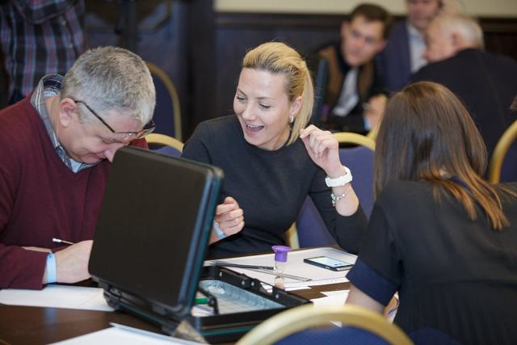

Новичок на удалёнке знает коллег по аватаркам: что даёт ему онлайн-тимбилдинг
Черновик · выходит: 01.12 10:00Поправить: напиши боту «правка W49 tenchat 04: что поменять» и приложи фото. Без правок выйдет как есть.
Новичок на удалёнке месяцами не видит коллег вживую. Для него команда выглядит так, как сказано у нас на странице онлайн-тимбилдинга: «голос в онлайн-конференции и аватарка с котиком». Онлайн-тимбилдинг даёт ему игру, где с этими людьми надо договориться и вместе решить задачу.
Онлайн-тимбилдинг: игра по видеосвязи для людей в разных городах и странах. Квизы, квесты, челленджи, совместное творчество, есть формат с VR.
Чтобы люди не выключили камеру через 10 минут, игра начинается за неделю до эфира. Мы открываем чат участников: там расписание, ссылки, небольшие задания и баллы за них. К эфиру команды уже знают друг друга по именам, а у новичка есть первые сообщения коллегам.
Что я советую HR перед заказом:
Смешивайте команды: новички, посаженные вместе, знакомятся друг с другом, а не с отделом. Ставьте по одному новичку в команду.
Ставьте задачу на общий результат. Командный квест, где каждый держит свой кусок, держит внимание дольше, чем викторина, где побеждает самый быстрый.
Берите рабочую платформу. Попутный эффект: команда осваивает онлайн-инструменты, которыми потом пользуется в работе.
Ведущий и платформа трансляции с нашей стороны. Если часть команды сидит в офисе, а часть в других городах, делаем трансляцию для тех, кто подключается удалённо.
Заказ от 249 000 ₽, команды от 50 человек.
Форматы онлайн-тимбилдинга: https://catalystrussia.ru/teambuilding/vse-programmy/c/online-timbilding/?utm_source=tenchat&utm_medium=post&utm_campaign=zavod-w48
